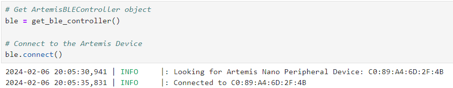

To start getting Bluetooth working, I needed to do a few things. After installing Python, Virtual Environment, and Jupyter Notebook, I needed to get the MAC address of the Artemis. I put that in the connection.yaml file and generate a new UUID and put that in that same .yaml file and in the ble_arduino.ino file. The following is a screenshot of the Artemis's MAC Address.

This next screenshot shows that my computer was able to connect to the Artemis over Bluetooth.
One way to test if the connection is working as it should is to send a message over Bluetooth and then see if the proper response is received. In the following image, the first line shown in the Juypter Notebook is sending the command to the Artemis to send the modified message back. The second line is listening for the response from the Artemis and prints it out.

Getting the time from the Arduino can be helpful for debugging later. The first line in the Jupyter notebook entry is sending the command for the time to the Artemis. The second line prints the read result from the Artemis. This is repeated two more times, just to see if it seems to be working as expected.

Here is a code snippet showing the Arduino’s end of things. It simply samples the time and writes it to the tx_characteristic_string for the computer to see.
case GET_TIME_MILLIS:
tx_estring_value.clear();
tx_estring_value.append( "T:" );
tx_estring_value.append( (int) millis() );
tx_characteristic_string.writeValue( tx_estring_value.c_str() );
Serial.print( "Sent back: " );
Serial.println( tx_estring_value.c_str() );
break;
Setting up a notification handler allows us not to have to manually check for what the Artemis does. This will help us later, even later on in this lab.

To determine how quickly we can send messages, we have to sample quite a few.

You are welcome to count and double check, but I had the Artemis send 25 time samples. These range from 4289719 to 4290572, with a difference of 853 milliseconds. 853 milliseconds to send 25 time samples means that it took 34.12 milliseconds per message on average. Each message is ten characters long (one T, one :, seven numbers, and one null terminator), at one byte per character, meaning we are sending ten bytes per 34.12 milliseconds. This comes out to 0.293 bytes per millisecond, or about 293 bytes per second.
I repeated this for 250 samples. The values range from 43289 to 49986, with a difference of 6697 milliseconds. This translates to about 26.788 milliseconds per sample. Each of these samples were eight bytes each. This translates to about 0.299 bytes per millisecond, or about 299 bytes per second. These two estimates seem to agree fairly closely.
The code snippet below shows the logic of storing and sending the time data. The command MILLI_ARRAY just tells the Artemis to store the time data into time_array, and SEND_TIME_DATA just tells it to send it from the time_array instead of sampling the time and sending it as before.
/*
* MILLI_ARRAY
*/
case MILLI_ARRAY:
for( int i = 0; i < TIME_ARRAY_SIZE; i++ ) {
time_array[i] = (int) millis();
}
break;
/*
* SEND_TIME_DATA
*/
case SEND_TIME_DATA:
for( int i = 0; i < TIME_ARRAY_SIZE; i++ ) {
tx_estring_value.clear();
tx_estring_value.append( "T:" );
tx_estring_value.append( time_array[i] );
tx_characteristic_string.writeValue( tx_estring_value.c_str() );
Serial.print( "Sent back: " );
Serial.println( tx_estring_value.c_str() );
}
break;
Thinking then to the Jupyter Notebook, the following image shows the resulting time array that has been received and reconstructed.

The following screenshot shows the notification handler that is able to parse the time and temperature data into two separate arrays.

The following image then shows the resulting arrays.

In terms of the advantages and disadvantages, the first method, live data transmission, allows us to have the data in case the robot dies and RAM is wiped before it can fully send all the data. It also gives us less-frequent sampling, which allows us to sample for a longer period of time (below we will find that at full-speed, we can only sample for ~3 seconds using the second method). However, the data cannot really be sampled more frequently using this method, which will likely be a disadvantage when we need to really see what is going on. Additionally, we can artifically throttle the sampling speeds of the second method, which can allow us to sample for longer amounts of time. This means we can get much finer detail using the second method, while still being able to sample at a fairly high frequency. The first method will also take up quite a bit of CPU time, as Bluetooth transmission is not a cheap operation. The second method will transfer data only when we are done testing or when we are full, allowing for CPU time to be preserved while the time sensitive things happen. The main disadvantage that I can fathom of the second method is really how long it takes to transmit after all is said and done. At about 300 bytes per second, transferring the entirety of the RAM would take over twenty minutes.
In terms of the speed at which the second method can record data, we can begin by doing something similar to calculating the data transfer rate of the first method. The time data ranges from 38978 to 38981. This is a difference of 3 milliseconds. This over the course of 200 data samples is about 66.67 samples collected per millisecond on average. Each sample is stored as an integer, which is 4 bytes on the Artemis. This comes out to around 266.67 bytes per millisecond on average, or 260.42 kilobytes (1024 bytes) per second.
Repeating this with 2000 samples, the data ranges from 32461 to 32504. This is a difference of 43 milliseconds. This over the course of 2000 data samples is about 46.51 samples collected per millisecond on average, or about 186.0 bytes per millisecond. This comes out to about 181.7 kilobytes per second.
And lastly, repeating this with 10000 samples, the data ranges from 158761 to 159071. This is a difference of 310 milliseconds, meaning there is about 32.258 samples collected per millisecond. This comes out to about 129.03 bytes per millisecond, or 126.01 kilobytes per second. This is likely the most accurate number out of the three we calculated, as it is the one calculated with the most samples.
Assuming we could use all 384 kilobytes of RAM for the array, we could fill up the entire RAM in about 3.05 seconds.
My code here is greatly inspired by Rafi's. I really tried for a long time to do my own thing with the while loops and stuff but I just couldn't figure it out.

I found that besides some outliers, the general trend was that the more data sent in a single transmission, the more efficient it is in terms of data transfer. This is likely because the larger the packet, the less the Bluetooth protocol is proportionally to the desired data.

To test for the maximum transfer rate to see if the computer is able to read all the data that was published, what I did was take the command GET_TEMP_READINGS used in Six, and ran it with a time and temperature array size of 25, while running the notification handler defined for Three, which prints what is found as soon as it can. The image below shows that the Jupyter Notebook's code was able to pick up all the data sent over Bluetooth by the Artemis.